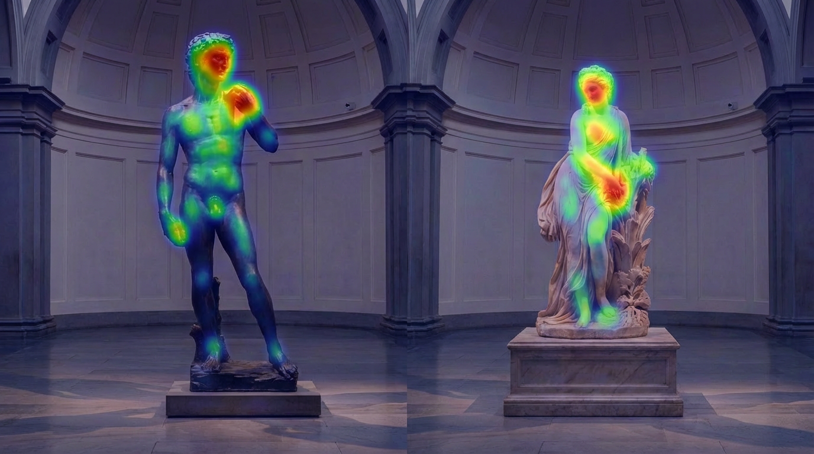
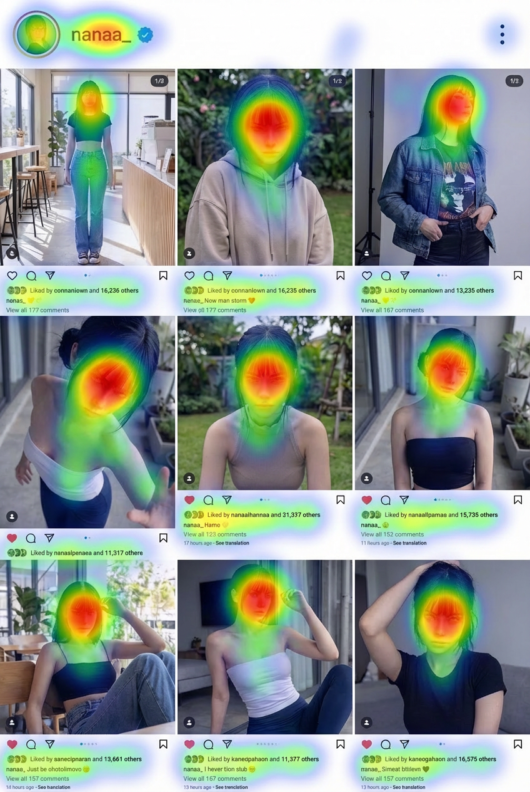

"They have merely outsourced the responsibility for their own bodies to everyone around them, much like how many people have outsourced their memory to their smartphones."
🐎 The Racetrack
📱 Smartphones
I used to marvel at people who scrolled through their phones while walking, seemingly able to navigate through crowds without looking up, perhaps utilizing some sort of bat-like echolocation. But later, occasionally driven by a vague antisocial impulse (which is not uncommon) or pure necessity (like navigating the narrow aisles of a grocery store), I would play a game of "chicken" with these people, walking straight toward them to see when they would swerve. Surprisingly, a lot of the time they didn't swerve at all, and after the collision, they would invariably blame me. Eventually, I realized they weren't navigating at all: they had merely outsourced the responsibility for their own bodies to everyone around them, much like how many people have outsourced their memory to their smartphones.
— Franklin Schneider, I See Your Smartphone-Addicted Life, The Atlantic
I'm not sure why, but people constantly complain about Chinese people looking at their phones on the subway instead of reading newspapers. This is an absurd complaint that ignores Chinese realities. Reading a newspaper requires flipping pages left and right, demanding a massive amount of space that is simply impossible to secure on a subway. It's not just a physical issue; the cramped space cannot even accommodate wandering eyes. As large mammals, making eye contact triggers alertness and a feeling of being preyed upon. As humans, letting our gaze linger on another person's body is considered rude. A smartphone not only helps to focus your gaze but also takes up minimal space. Hold it up, and it can even act as a boundary marker. In fact, not looking at your phone on the subway is borderline impolite.
— Wang Xiaowei, The Depths of the Everyday
The feeling of being online is like a child you are desperately trying to avoid, who constantly demands you play games with him. This child always knows where you are, lurks on the edges of your social circles, and his mother always seems to bump into your mother during school pick-up. Even in these exasperating situations, you have ways to escape in real life. But the internet is relentless; it never accepts "no" for an answer, and it won't even pick up on your hints.
— Pamela Paul, 100 Things We've Lost to the Internet
Approaching the intersection near the bus stop, a cyclist asked me to look up the location of "Yuehe Floral Street" on my navigation app. Nowadays, asking for directions doesn't mean asking how to get somewhere; it means saying, "My phone is dead, so I'm asking your phone how to get there."
— December 16, 2024, Daily Observation
📰 News
Listening to hourly radio news is far worse than reading a weekly magazine, because longer time intervals filter out some of the information.
— Nassim Nicholas Taleb, The Black Swan
Newspapers need to fill their pages with a certain amount of news every day—especially news that other papers are reporting. But to do things right, they must learn to stay silent when there is no major news. On some days, a newspaper should only be two lines long, while on others it should print two hundred pages—proportional to the intensity of the information.
— Nassim Nicholas Taleb, Antifragile
Modern practices adopted by academic work are often indistinguishable from journalism (except for the rare, occasional production of originality). Because academic work draws attention, it is highly susceptible to the Lindy effect: hundreds of thousands of papers are nothing but noise, regardless of how much intense emotion they stir up upon publication.
— Nassim Nicholas Taleb, Antifragile
"Every morning brings us the news of the globe, and yet we are poor in noteworthy stories. This is because no event comes to us without being already shot through with explanation. In other words, by now almost nothing that happens benefits storytelling; almost everything benefits information." This illustrates that explanation and narration are mutually exclusive.
— Byung-Chul Han, The Crisis of Narration
In an opaque world, the very concept of "cause" is suspect; it is either nearly impossible to detect or completely impossible to define—this is another reason we shouldn't read newspapers, because they are always trying to find causes for everything.
— Nassim Nicholas Taleb, Antifragile
Why is it only fiction that allows us to remember? Because fiction utilizes the privilege of fabrication to provide explanation. The news only presents the mad behavior of the masses, but a novel provides us with the full context. It shows us how the masses were stimulated and manipulated into a frenzy by the perfume concocted by Süskind. Accompanied by this explanation, the event engages the brain's comprehension functions and is slotted into long-term memory.
— Yang Zhao, Rebuilding the World with Love and Responsibility
💡 Fleeting Thoughts
Modern poetry is simply poetry that you won't feel is particularly good.
It's very easy to sing in a way that gives people goosebumps; all you have to do is let your voice crack.
Pyramid schemes are an infinite game.
"Trying to run, trying to fly, before you can even walk steadily." But birds that can fly are generally not very steady walkers.
🛠️ Workbench
💻 Obsidian Plugin
A while ago, numerous AI command-line tools hit the market. Although designed for programming, they are actually quite suited for editing tasks within an Obsidian note vault.
I used Gemini CLI heavily for a period, but eventually abandoned it due to frequent login failures, switching to the domestically produced iFlow CLI.
I hadn't noticed this when using Gemini CLI, but iFlow CLI would frequently, after multiple attempts, utter astonishing statements like, "I have no way to rename files."
At this point, I would tell it: just write a Python script then—and the problem would be solved instantly.
This led me to realize that some editing operations, while complicated to describe, should actually be quite easy to program.
So what exactly did I need?
When writing blog posts, I tend to just paste images in haphazardly. The names are randomly generated by Obsidian and make very little sense. Therefore, I needed a way to rename them sequentially based on their appearance in the article, reflecting both the article's title and the image's specific number.
So I still ended up using iFlow CLI to write an Obsidian plugin, constantly debugging and modifying it based on my user feedback—plunging right back into the nightmare of fixing one bug only to spawn several more. However, ever since I started working, I find myself increasingly intolerant of such time-wasting endeavors.
Eventually, I managed to tune it into a barely usable version. Interestingly, if other notes also reference the same image, the filename in those links will update accordingly. Additionally, I meticulously preserved a baffling bug: after the program runs, the cursor on the edit page vanishes completely, reappearing only if you switch tabs once (you can hit Alt + Tab twice to fix it).
Consider it a token of my appreciation.
👁️ The AI Gaze

I happened to stumble upon something called "eye-tracking heatmaps," and in a flash of inspiration, I felt I could get Nano Banana to generate them.
I used the simplest prompt possible, such as:
Use this image as a base, do not alter any details whatsoever, and overlay an eye-tracking heatmap onto it.
Here is a mock Instagram Feed page; as you can see, faces are the primary focus:

This is the Base page for my blog in Obsidian. I had originally hoped to use this as a guide for designing covers, but as it turns out, the AI is primarily just looking at the text:
It has absolutely no practical utility; it is purely a visual aesthetic.